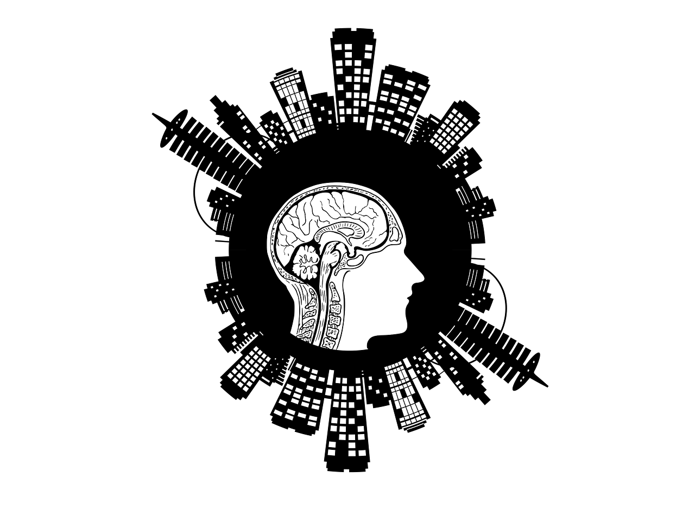

La inteligencia artificial en 2025

Exploramos los avances más recientes en inteligencia artificial y cómo impactan
en la vida cotidiana.
La inteligencia artificial en 2025 se ha consolidado como una herramienta esencial
en múltiples áreas, desde la medicina hasta la educación. Su capacidad para analizar
grandes volúmenes de datos en tiempo real permite optimizar procesos y ofrecer
soluciones personalizadas. Además, los avances en modelos de lenguaje y visión
artificial han impulsado la automatización y mejorado la interacción entre humanos
y máquinas.
Los mejores smartphones del año
Comparativa de los modelos más destacados en el mercado actual y sus características principales.
En 2025, los smartphones destacan por su potencia, cámaras avanzadas y pantallas de
alta frecuencia de actualización. Las marcas líderes apuestan por diseños más
delgados, baterías de larga duración y funciones impulsadas por inteligencia
artificial, como asistentes personales y fotografía computacional. La conectividad
5G y el inicio de la adopción de 6G marcan una nueva era en velocidad y rendimiento móvil.
La nube como motor de la transformación digital
Cómo las empresas están adoptando soluciones cloud para crecer y ser más competitivas.
La nube se ha convertido en el pilar central de la transformación digital de empresas y
organizaciones. Gracias a su escalabilidad y flexibilidad, permite almacenar y procesar
grandes volúmenes de información de manera segura y eficiente. En 2025, la nube no
solo impulsa la innovación tecnológica, sino que también facilita la colaboración
global y acelera la adopción de nuevas herramientas basadas en inteligencia artificial
y análisis de datos.